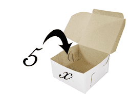
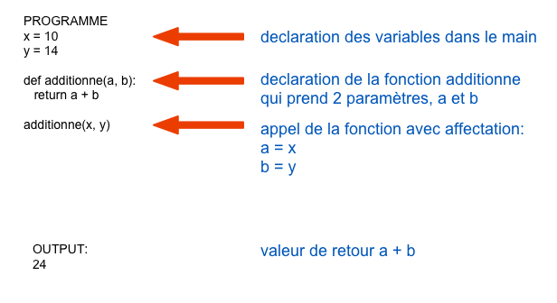
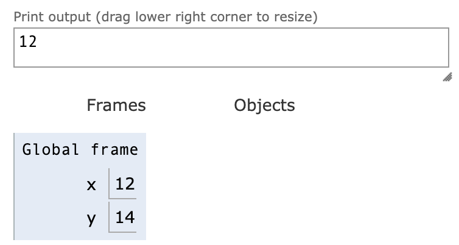
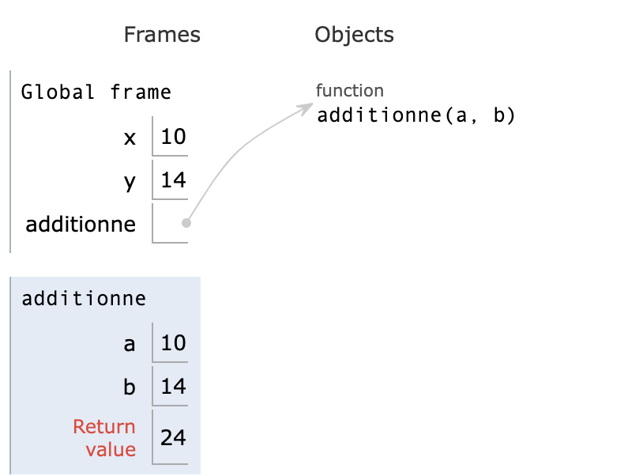

variables
Variables
1. Definition: Une variable sert à stocker une valeur, qui peut être un nombre, une chaine de caractère, ou autres. Une variable est identifiée par un nom, et pointe vers un espace mémoire.

VARIABLE = espace de STOCKAGE
2. Quel nom peut-on choisir pour une variable?: On peut choisir une lettre simple, minuscule ou majuscule, ou une chaine de caractères SANS espaces, et commençant obligatoirement par une LETTRE. Le nom peut contenir certains caractères spéciaux comme par exemple _. (ne pas utiliser le signe -, utilisé pour une soustraction entre 2 variables).
Exemples de noms de variables:
- x
- y
- a
- B
- longueur_L1
- nom
- age
- personne3
- Score
- Points_de_vie
- …
L’idée est de choisir un nom assez explicite, et d’éviter d’utiliser trop souvent x, y, a, b, c, …
3. Affectation On affecte une valeur à une variable en utilisant l’opérateur =.
Par exemple, pour affecter la valeur 5 à la variable x, on fait:
Pour vérifier la valeur d’une variable, il suffit d’écrire celle-ci:
- soit toute seule dans une cellule du notebook
- soit à la dernière ligne de la cellule du notebook:
- Soit avec la fonction
print(ne pas mettre de guillemets)
On peut modifier la valeur d’une variable existante. On peut méme lui affecter le résultat d’une opération:
Et utiliser la valeur de cette même variable pour l’opération:
Affectation multiple: On peut affecter une valeur à plusieurs variables en une seule ligne, ce qui amèliore la lecture d’un script:
peut être remplacé par:
4. Opérations sur les variables Une variable a un TYPE qui est défini lors de l’affectation. Python s’adapte lorsque vous faites une affectation et choisit le type correspondant.
Pour démarrer, nous verrons les TYPES str (chaine de caractère), int (nombre entier) et float (nombre décimal, en virgule flottante).
Les opérations possibles sur une variable dépendent de son type.
- Pour les variables de type nombre int et float, on peut utiliser les opérateurs
+,-,*,/,**,//,% - Pour les variables de type str on peut aussi utiliser les opérateurs
+,*mais le résultat est différent (opérateurs de concaténation).
5. Variables et paramètres d’une fonction
Les variables déclarées avec la fonction, entre parenthèse sont appelées paramètres. Le schéma suivant illustre l’affectation des valeurs des variables a = x et b = y lors de l’appel de la fonction additionne(x, y):

Visualiseur python
Le site pythontutor permet de visualiser le contenu des variables et leur espace de nom.
exemple 1:
Cliquer sur next pour dérouler le script pas à pas.

exemple de représentation avec 2 variables x et y dans le main
exemple 2:

exemple avec appel d'une fonction
Editeur Python
Ouvrir dans winpython > python QTConsole

Travaux pratiques: opérations sur les nombres
Tester les scripts suivants dans l’editeur Python. Pour cela, recopier dans l’ordre, et dans la même cellule, chacune des instructions du script, et executer celle-ci. Repondre ensuite aux questions.
Script 1
Incrémenter une variable…
- Question a: quelle est la valeur de
ageà la fin du script?
Script 2
Le programme suivant permet de connaitre en quelle année un enfant, né en 2022, aura 17 ans
- Question b: en quelle année aura-t-il 17 ans?
Script 3
On veut réaliser les opérations suivantes:
- Question c: Quel est le résultat (c’est à dire la valeur finale de
nombre) pour une valeur de departnombre = 5?
Script 4
Écrire un programme dans l’éditeur qui :
- affecte 3 à la variable
nombre - Ajoute 7 au triple du nombre.
- Multiplie le résultat par le nombre lui-même.
- Soustrait au résultat le nombre 1 ;
- Affiche le résultat obtenu.
Ne pas utiliser de nouvelles variables pour les résultats intermédiaires. Seulement nombre
- Question d: Quel est le résultat?
Script 5: permuter la valeur de 2 variables
On veut mettre la valeur de a dans b et celle de b dans a. Le problème est que lorsque l’on fait…
… on se retrouve avec les mêmes valeurs pour b et pour a. Il n’y a pas eu d’echange. L’idée est d’utiliser une troisième variable, c pour stocker la valeur de b, puis de l’affecter à a
- Question e: Ecrire la série d’instructions correspondantes. Puis vérifier qu’il y a bien eu échange entre les variables.
Opérations sur les chaines de caractères
Script 6
Associer des chaines de caractères.
Cet exemple vous a rappelle que l’opérateur + est l’opérateur de concaténation avec les chaines de caractères.
- Question f: Ecrire un nouveau script qui construit le message suivant:
Ho Ho Ho Ho Ho Ho Ho Ho Ho Ho, où le nombre deHoest stocké dans une variable N.
Astuce: utiliser l’opérateur *
Script 7
Associer des valeurs numériques et des chaines de caractères
- Question g: Le script s’execute t-il, ou bien renvoie-t-il une erreur? Quelle erreur le cas écheant?
- Question h: Modifier l’avant derniere ligne par:
message = "mon nom est " + nom + ", et j'ai " + str(age) + " ans". Le script fonctionne t-il? Que renvoie t-il?
Remarque: La fonction str va tranformer la valeur numerique age en une chaine de caractères (les caractères “2” et “1”).
Tester également l’instruction: print("mon nom est ",nom ," et j'ai ",age, "ans")
Que constatez-vous?
Script 8
Afficher avec la fonction print
- Question i: Completer la derniere ligne du script pour afficher la phrase suivante:
Le reste de la division de 45 par 26 est egal a 19Vous ne devrez pas écrire les chiffres 45, 26 et 19 dans le message. Seulement utiliser les variables, ou une opération sur ces variables.
Nous avons vu qu’une chaine de caractère pouvait être construite comme une association de plusieurs chaines de caractères. Une chaine de caractères est de type string (ou str) en python.
Pour vérifier le type d’une variable, on utilise la fonction type
Testez chacune des instructions suivantes pour vérifier le type des différentes variables
- Question j: Compléter le tableau
| x= | type(x) |
|---|---|
| 45 | |
| 45%26 | |
| 45/26 | |
| 45//26 | |
| str(45) |
Script 9
Calculer en physique
Dans une cellule Python,
- commencez par attribuer 100 à la variable
m, et 20 à la variablev - calculer puis afficher E, l’energie cinetique pour un systeme de masse 100kg et de vitesse $20m.s^{-1}$, selon la loi:
-
Question j: Quelle est l’expression que vous avez saisie en langage Python? Quelle est la valeur calculée pour l’énergie cinetique?
-
Question k: Construire une chaine de caractères, en utilisant la fonction
formatet précisant les conditions initiales, les valeurs pour m et pour v, et le résultat du calcul de l’énergie cinétique. Recopier ici cette instruction en python.
L’expression formatée a été vue dans le cours sur les variables et opérateur, partie “chaines de caractères” et consiste à utiliser la méthode de chaine "caracteres {}".format(x)
- Question l: créer une fonction
Ecqui prend pour paramètresmetvet retourne le resultat de $Ec = \tfrac{1}{2}m.v^2$. Appeler cette fonction avec les valeurs 100kg et $20m.s^{-1}$
Portfolio
- Comment se nomment en python les 4 types primitifs que l’on a vus lors de ces premieres séances?
- Le changement de type entre variables se fait grace aux fonctions
str, ‘float’,int, etbool- Comment transformer la chaine “12” en une valeur entière égale à 12? “12” => 12
- Comment réaliser l’opération inverse? 12 => “12”
- Comment transformer la chaine “12” en un nombre flottant? “12” => 12.0
- Comment transformer l’information 1 en un booléen
True? - Comment réaliser l’opération inverse?
- Qu’est-ce qu’une affectation multiple, en une seule ligne d’instruction?
- Comment échange t-on la valeur de 2 variables
aetb? - Pourquoi l’instruction:
print("aujourd'hui j'ai "+ 18 +"ans")ne fonctionne t-elle pas? Corriger cette expression (donner 2 moyens). - Donner un exemple d’utilisation d’une expression formatée pour écrire le résultat du calcul de la force de gravitation $F=G\times m_1 \times m_2/d^2$, à partir des différentes variables.
- Quel sera le type associé à
Fsi l’on réalise le calcul? - Comment définir une fonction
F_gravitationpour réaliser le calcul deF? - Comment utiliser cette fonction pour calculer la force de gravitation Terre-Lune?
$M_T = 5.972\times 10^{24}kg$,
$M_L = 7.348\times 10^{22}kg$,
$d = 3.844\times 10^{8}m$,
$G = 6.67\times 10^{-11}SI$